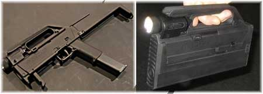

Imagine-se entrando em um ambiente escuro. Você não sabe os perigos que a penumbra esconde em um prédio abandonado, mas você tem que entrar. Você só pode levar um objeto. Qual dos dois na foto abaixo você escolheria?
[caption id="attachment_1259" align="aligncenter" width="450" caption="Sub metralhadora 9mm dobrável da Glock"][/caption]
Claro, não é sério. Quer dizer, é mais ou menos. Este é uma arma conceitual, um protótipo da Glock. É a Magpul FMG-9. Dobrada, parece um rádio ou algo assim, com uma lanterna embutida. Mas na verdade é uma sub-metralhadora calibre .9mm dobrável. Veja no vídeo de demonstração:
Apesar de ser um item que não foi criado para venda, é deveras interessante, aliás, como todo projeto conceitual deve ser. Tem outros vídeos pequenos aqui e aqui.